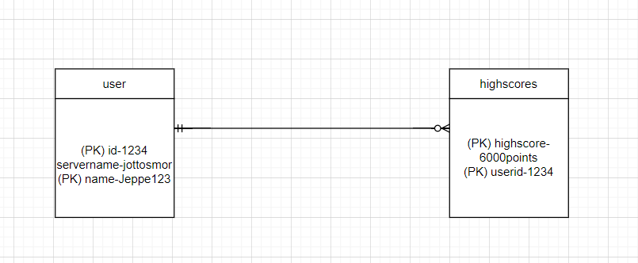
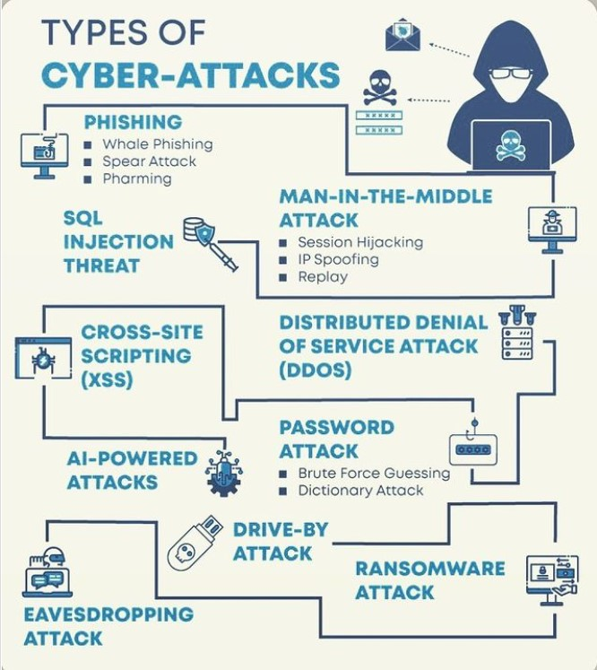
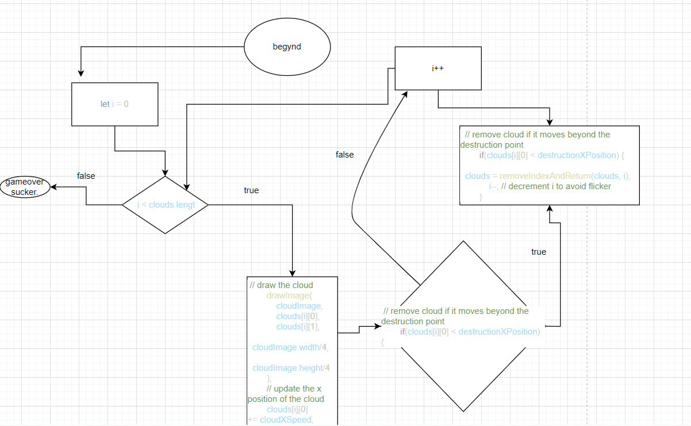

Informatik Noter
HTML og CSS
html er til at definere indholdet på en hjemmeside link til forklaring: https://www.w3schools.com/html/html_intro.asp hele denne logbog er bygget op på forskellige html filer som f.eks forsiden osv
css er til at ændre visuelt på sidens indhold og findes overalt i logbogen så som farven på teksten osv.
https://w3-lab.com/5-core-principles-graphic-design-rules/ /
5 principper
Contrast - hvordan farver virke til hinnanden eller eks så stor skrift til overskrift og mindre skrift til brødteksten. Det kan også være ting som ikke passer sammen særligt godt hvilket giver en kontrast
Repetition - man skal gøre det samme så det ikke giver forskellige indtryk hvis du vil have et neutralt og normalt udtryk
Alignment - skaber en balance ved at holde ting i orden fks ved at holde ting på linje
Proximity - nærhed på dansk og er brugt
Whitespace - de tomme pladser der gør hvad der er vigtigt udstår
Javascript og DOM
Javscript virker på sammemåde som css med du skriver det ind i dens ejen fil og kan derefter sæt et det ind til de andre filer så de kan bruge den algoritme man har skrevet ind, gør at elementer bliver dynaimiske. DOM er et redskab man kan bruge i javascript
3 faser
Asses: Finde ud hvad bruger har behov og finde problemmer osv. Før vi kan gå ind i de andre faser. Metoder at bruge er fks. Interviews, observationer, spørgskemaer, bruger tester og selv undersøge siden.
Design: kommer man så med potentielle løsninger til at de problemer brugeren kunne have metoder man kan bruge er fks. En persona, lave scenarier og andet.
Build: prøver at tage design, for det meste de bedste og lave nogle prototyper af det så man kan finde ud af hvilken retning ens produkt er på vej imod. Metoderne man bruger i build fasen er fks. Low-mid-highfidelity prototype
Fidelity er hvor meget det ligner det endelige produkt Low - mid og high er så hvor meget det gør hvor low er det mindst ligner mens high mest

NB. mange noter er taget i sammenhæng med simons flappybird spil som jeg har fået et bedre indblik i hvordan de forskellige ting bruges
Variabel og datatyper
Let, var og const
Alle 3 variabler til at gemme data i computerens hukomelse.
Const er en konstant variale som ikke kan ændres når den køre mens let og var kan
Data typer
Forskellige typer kode der gør forskellige ting
links:
https://www.w3schools.com/js/js_datatypes.asp
https://www.w3schools.com/js/js_variables.asp
If statements bruges til at brugskrive foran noget kode i js som siger hvis noget er sandt
Kan udvides så man kan lave lange "linjer" af if statements
Funktioner bruges til at gemme et stykke logik til at bruge andre steder i koden så man ikke skal skrive det ind flere stedet. Tager for det meste noget input og udregner det så det giver det output
Opreratorer er en masse forskellige tegn der gør en masse forskellige ting. Lidt ligesom i matematik kan forskellige ting gøre forskelligt og der er Mange forskellige operatorer f.eks.comparing, logical, assignment osv.
links :
https://www.w3schools.com/js/js_arithmetic.asp
https://www.w3schools.com/js/js_assignment.asp
https://www.w3schools.com/js/js_comparisons.asp
https://www.w3schools.com/js/js_if_else.asp
https://www.w3schools.com/js/js_functions.asp
Opreratorer, if statements og funktioner
If statements bruges til at brugskrive foran noget kode i js som siger hvis noget er sandt Kan udvides så man kan lave lange "linjer" af if statements
Funktioner bruges til at gemme et stykke logik til at bruge andre steder i koden så man ikke skal skrive det ind flere stedet. Tager for det meste noget input og udregner det så det giver det output
Opreratorer er en masse forskellige tegn der gør en masse forskellige ting. Lidt ligesom i matematik kan forskellige ting gøre forskelligt og der er Mange forskellige operatorer f.eks.comparing, logical, assignment osv.
links:https://www.w3schools.com/js/js_assignment.asp
https://www.w3schools.com/js/js_arithmetic.asp
https://www.w3schools.com/js/js_comparisons.asp
https://www.w3schools.com/js/js_if_else.asp
https://www.w3schools.com/js/js_functions.asp
Arrays og loops
En variable der kan indholde mere end 1 værdi, adskiller værdierne med kommaer.
Bruger det så man ikke skal skrive mange gange de samme variabler.
De ser fks. Sådan ud:
Const arraysnavn =[ "saab", "volvo"]
Man kan bestemme hvilken bestemt værdig med at skrive hvilken man skal have f.eks. [0] hvor de starter fra 0
Man kan sætte arrays inde i arrays
Loops gør at en blok kode kan bliver "executed" så længe den bestemte kode er true
While(condition) er et simpel loop
for (let .....) går også det samme simple loop men bare man skal skrive en variable den skal gøre det udfra
Det smarte ved loop er det gentager koden så man ikke skal skrive alt koden igennem flere gange
links :
https://www.w3schools.com/js/js_arrays.asp
https://www.w3schools.com/js/js_loop_while.asp
https://www.w3schools.com/js/js_loop_for.asp
Prompt/alert
Alert laver en pop up som skriver noget tekst samt den pauser ens kodning
Fks:
Alert(gameover) og der vil poppe en medelse op hvor der står gameover
Promt er også en pop up men den lader brugeren definere noget indhold, findes fks når man skal lave usernames, tryk ja/nej elller andet
+ du kan add et promt til en alert så det adder det promt til allerten
Det specialt godt til ting som at lave usernames highscores og andre game elementer
links:
https://www.w3schools.com/js/js_popup.asp
databaser og andet
ind i min fullstack demo Jeppe Martensen's fullstackdemo
NB: man kan kun se det visuelle på siden, da den ikke er på nogle local host!
server client modellen
Client server moddellen er ret simpel. En bruger requester noget data til en server, og serveren giver en respons.

3 lags akitetur
3 lags akitetur er en model man bruger til at beskrive hvordan bruger for data ud fra en database.
Det første trin er "Client tier" eller "presentation layer" som består er en bruger der ved brug af hans/huns computer, ipad og endda telefon ser hjemme siden hvor man for vist knapper og andet
Det andet trin er "Server/Logik" hvor den forspørgsel som f.eks. Kan være en kode eller andet kommer ind I serveren. Her verificere serveren om det rent faktisk er dig og dermed kan den sende daten vidre til det sidste lag.
Det sidste trin er databasen, hvor serveren kan få den spurgte data den requsted og sende det tilbage til brugen. Et eksempel kan være når man logger ind på et hjemmeside er hvis du skal logge ind fra google eller andet, vil google spørge den database om det dig og efter den ved det, sender serveren dataen til dig og logger dig ind.
billede af 3 lags akitetur

HTTP og HTTPS (samt get,post,put,delete)
HTTP metoder
HTTP står for Hyper text transfer protokol og er ikke som så et programerings sprog. Der er 4 HTTP metoder som jeg forklarer under
Get: Get, er en metode der forespøger noget Bestemt data. Så i fullstack demoen kan det bla. Være get highscore som bruger denne metode, ellers ville man ikke kunne se den forrige data.
Link: https://developer.mozilla.org/en-US/docs/Web/HTTP/Methods/GET
Post: Post, er lidt det modsatte af Get, da istedet for at spørge om noget data giver det. F.eks. Er det hvis du har et billede, så skal du bruge Post for at uploade det til data basen
Link: https://developer.mozilla.org/en-US/docs/Web/HTTP/Methods/
Put: Put laver noget nyt, eller erstatter noget data. Forskellen fra put og post er at hvis man f.eks updatere med put et dokument 100 gange, ville man være inde på det samme dokument efter, iforhold til post ville man have åbnet det samme dokument 100 gange.
Link: https://developer.mozilla.org/en-US/docs/Web/HTTP/Methods/PUT
Delete: Delete er meget simpelt da det sletter det dokument.
Link: https://developer.mozilla.org/en-US/docs/Web/HTTP/Methods/DELETE
 billede som eksempel af de forskellige metoder
billede som eksempel af de forskellige metoder
ekstra data base (ERD osv.)
Entity relationship diagram: relationer fra dokumenter til dokumenter hvordan de connectes igennem piramary keys og foriegn keys
Joint: forbinder nogle dokumenter sammen med deres PK og FK
Primary key og foriegn key: primary key er et unikt ID hvpr der kan stå kunders navn adresse osv.
Et forieng key kommer fra et andet sted som et andet dokument eller enhed.
Et system mellem user og highscore kan se sådan ud:

cyberattack (billede til at huske)

Flowcharts
gestalt lovene :)
hvorfor er de vigtige og hvorfor bruger man dem ?
en gestalt lov er et "krav" om hvordan f.eks. en hjemme side ser ud.Dog er det ikke kun hjemmesider de bliver brugt til, de har eksiteret i 80-90 år men er meget aktuelle nu når alt er digitaliseret. De bygget på hvordan menneskers hjerne opfatter sammenhænge i omverdnen (oplysninger fra: https://www.nielsgamborg.dk/?p=gestaltlovene)
der er 7 love, men man snakker ofte kun om 5 love da de er de mest aktuelle. de 5 love er
lov 1 - nærhed

lov 2 - lighed
 /p>
/p>
lov 3 - lukkethed

lov 4 - forbundethed

lov 5 - figur og baggrund

Ctrl+shift+i for at åbne console og evt se om den viser fejl eller andet
Informatik Projekter
Simon klinkby og jeppe martensen informatik projekt
1 person fra slottet ( både lære og elever ) kan sende en nyhed/event eller hvad end de føler kunne være vigtigt for en person på slottet at få at vide.
En modtager en bedsked, og ser om det er gyldigt og okay for andre at se.
Efter modtageren har bekræftet at det er okay kan han sende den ind på en bestemt app på celver touch skærmene. Folk kan åbne og læse om de forskellige events og andet der foregår på slottet.
access (problem stilling)
Målet er for den enkelte at finde ud af hvad der foregår på slottet :)
design fase
vi har først lavet en brainstorm som så sådan ud:
Clever touch skærmene ville kunne bruges til at vise nyheder frem. Flere morgen samlinger. LECTIO (men ofte checker folk dem ikke). Man kunne lave en hjemmeside/folder hvor folk kunne følge med hvad der sker.
vores endelige tanke er at bruge vores idee om clever touch skærmene og derfor har vi fremstillet den sketch 
build fasen
første skridt var vi lavede en prototype inde på denne logbog der hedder ... hvor vi har stilt det visuelt op så vi kunne se hvad vi kunne forbedre, og der bla. en del ting den hjalp med.
vi har formået at lave en hjemmeside vedbrug af html og hjælp fra https://www.geeksforgeeks.org/css-website-layout/ som vi har godt fremstillet til at vise hvordan man mugligt kan løse vores problem i acces fasen: til projekt
vi blev færdige med vores hjemmeside den 15-12-2021 og er tilfreds med vores produkt.
flappybird spil
for at komme til spillet: spillet !!
hvad tanken var
i vores projekt om databaser, lavede vi et social medie til at kunne "rate" hinnandens flex
overvejelser
Vi havde følgende overvejelser:
lav et tinder til at flex (flextinder)
flextinder er at en bruger indsender et billede, andre kan "rate" ens billed,
og når ens billed bliver rated for brugeren respons.
billederne skulle fungere ligesom tinder så man kan swipe frem og tilbage
lav et html og css setup.
lav knapper der fungere med JS og giver respons til data basen
lav et rating system hvor brugen giver stjerner og man for en bestemt score
scoren på rating systemet skal være limmited til 1-100 points eller ligende (fix rating system)
småting
en slags kommentar felt
erstat smileys - give dem respons
gør så flere usere kan komme på
gøre at billederne er alligned
OBS. serverens terminal kan ikke åbnes bortset fra hvis du "ejer" den side. derfor er det kun visuelt indhold af siden man kan se
projektet !!wordpress
i So2 atrbejdede jeg sammen med mikkeline,Magnus og Frederik om at lave en hjemme side til nye 1'ger.
mål: skrive om lys som bølger som en ny startende elev ville forstå.
lave et nemt layout der nemt at navigere rundt i, samt kunne analysere ved brug af dansk metoder
bruge forskellige plugins og ekspermitere rundt i wordpress
forsøg 1
lav en knap til at ændre skrift farven på logbogen
(obs)når man har valgt en farve skal man trykke på skærmen for at få den til at skifte farve
lommeregner (kan skifte mellem gange, plus, minus og dividere hvis man ændre tegnet i koden)